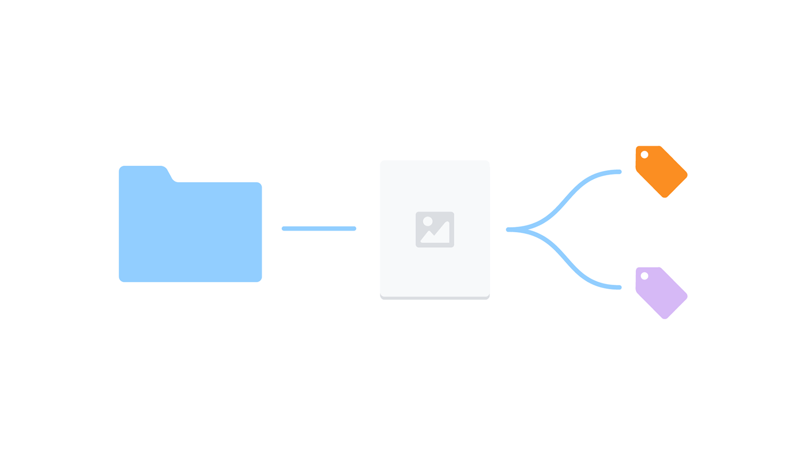
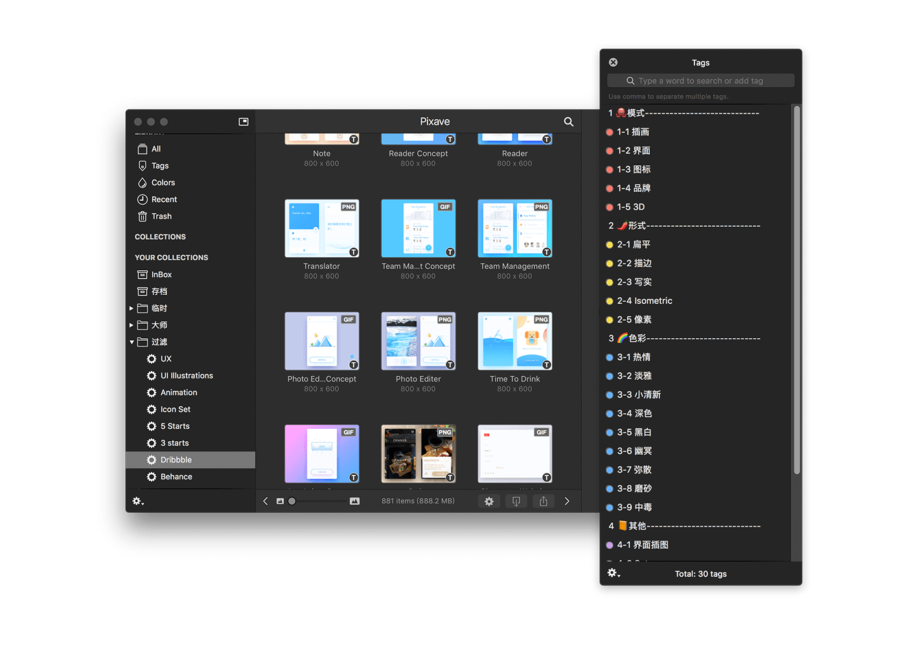

最近看到了一篇关于文件管理中的标签的文章，里面提到了一种利用标签来实现高效率管理文件的方法，从而联想到可以把这种方法应用到设计灵感素材管理上，解决之前经常遇到的素材分类困难的问题。
1. 为什么要用标签
设计师作为一个创造性的职业，平时会收集不少灵感素材，收集了素材肯定就需要整理，通常大家会直接用文件夹进行管理，比如 界面 的放一个文件夹，动效 的放一个文件夹，图标 的放一个文件夹，这种分类方法看起来简单有效，但是一旦素材过多之后我们可能就会陷入困惑。比如我们遇到了一个界面的动效图，这个图我在界面和动效方面都值得参考，为了日后查找不出现遗漏，那我们就必须要在 界面 和 动效 里都要放一份这个图片，这样就导致一个图片被复制了两次，占用电脑空间不说，同时也大大降低了管理效率。

相信大家这个时候也想到了标签的好处了，「标签」和「文件夹」都是现实生活中常见的管理文件的方式，但在计算机世界不同的是，标签不是「贴」在文件上的，而是可以作为「容器」把文件「装」到标签内的，所以在这点上，标签和文件夹是一样的了。另外标签还拥有一个重要的特性，就是「不排它」，同一个文件只能拥有一个文件夹，但却可以拥有多个标签，这种一对多的特性可以让文件以更细的粒度做文件筛选，查找起来也就更方便了。
既然已经确定了用标签来对素材进行分类了，那么我们就必须要选一款支持标签管理图片的工具了。其实市面上大部分图片管理工具都是支持标签的，比如 Bridge、Pixa、inboard、Pixave、Eagle 等，但试用下来发现，对标签比较友好的就是 Pixave，Pixave 有独立浮动的标签面板，可以多选标签，为图片添加标签也比较方便，而且 Pixave 会生成图片缩略图，在图片过多的时候也比较流畅。所以在下文我主要会结合 Pixave 这款工具来讲一下如何合理的使用标签。
2. 为标签制定原则
和文件夹不一样，标签的添加会更加灵活，但也比较容易造成混乱，为了避免这种情况，我们在给图片加标签前，就要整理好一套自己的标签使用规则。不过每个人的情况不同，比如视觉设计师可能会比较关注色彩风格，交互设计师则比较关注交互形式等，我这里主要是分享的一个大致思路，首先我们可以尝试用思维导图工具来梳理一下自己对素材的关注点，然后为了保证标签的整齐有序，可以遵循 MECE原则，也就是 1. 各部分之间相互独立 2. 所有部分完全穷尽。解释一下就是最好不要出现两个有重叠含义的标签，也要保证每个图片至少有一个标签。
 ▲ 结合手上的灵感素材，用思维导图对标签进行整理分类
▲ 结合手上的灵感素材，用思维导图对标签进行整理分类
标签梳理好后，我们就可以把标签整理到素材管理工具里面了，为了让添加的标签有层级感，同时也为了日后使用起来更快捷，我们可以为标签前面添加符号或数字来表示层级：
1 模式
1-1 界面
1-2 图标
…
在使用标签的时候，还要牢记一条准则就是，添加标签的目的是为了我日后创作时检索图片服务的，所以加标签的时候好保持克制，不要随意增加不具参考价值的标签。 比如在上面的一些标签中，可以有以下原则：
1. 模式：是对素材最首要的分类，每个图片至少有一个模式的标签
2. 形式：插画或图标必须有该标签，其他模式下有可突出表现可供参考的也可以添加
3. 色彩：非必须标签，可突出表现可供参考的才添加该标签
…
在制定好自己的标签原则后，就可以把标签添加到设计工具里了，同时为素材添加标签（这个在初期图片比较多的话可能是个麻烦的事情，不过全部添加好之后，后面会收益无穷💩）。

▲ 在 Pixave 中的标签面板添加标签，可以通过符号和数字对层级进行划分。
3. 用好过滤条件
标签都整理完之后其实就可以做很多有意思的事情了，其中最强大的就是结合 Pixave 的智能收藏夹（Smart Collection），可以对标签的进行并集或交集。比如我常用的一个就是 Icon Set 的规则，它可以把我的素材中所有的套装图标整理出来，另外如果需要，你还可以进一步筛选是描边风格的图标还是写实风格的图标。

另外智能收藏夹还不仅仅可以针对标签进行条件组合，还可以通过标题，来源，文档类型，评级，时间，图片尺寸等多种维度进行组合，比如我希望筛选所有的界面动效的素材，我就可以使用1. 文档格式是 GIF 的；2，标签是界面 这两个条件轻松筛选出来。
4. 其他技巧
🗂 文件夹的使用
使用标签之后并不意味着完全抛弃文件夹，毕竟我所有的图片还是至少要添加到一个固定的文件夹内，然后才能用标签进行筛选。同时文件夹也是这些工具默认的分类方式，开发者为文件夹提供了方便的查看和添加入口。那么我是如何使用文件夹的呢？
- 待整理（inbox）：做事最有效率的事情就是批处理。所以我在浏览网页碰到希望收藏的素材后并不急于马上整理分类，而是会先统一归类到默认的待整理文件夹，然后再找一个固定的时间来做分类的事情。
- 存档：所有分配好标签的素材都统一归档到存档里面，以后要查看都是通过标签筛选。
- 某某设计师：这里是按设计师分类的素材，设计师是具有「排他」属性的，很多设计师的作品风格都比较固定统一，由于我会经常查看某个人的作品，所以我就用文件夹进行分类了。
📱 手机上灵感的保存
手机作为人们现在最常用的电子设备之一，平时也会接触到各种各样的设计灵感，比如打开一些 App 碰到了设计优秀的界面或者是交互动效等，那么我如何保存这些灵感呢？
截屏或录屏： 在手机上碰到值得参考的页面，我通常会直接截屏保存到相册，但如果是动画的话就只能使用录屏了，在 iOS 11 之前我一般是使用 QuickTime 给手机录屏，但在 iOS 11 后，系统自带有录屏功能了，只要在系统设置里面把录屏添加到控制面板，以后就可以轻松调用了。录屏之后，如果是比较短希望循环播放的动画的话，有人可能会需要转换成 GIF，苹果可以使用 WorkFlow 将相册视频转换成 GIF；安卓的话，我使用的锤子手机也有自带的录屏功能，同时相册内也支持视频转 GIF ，还是比较方便的。
使用自动化工具实现自动导入： 灵感截屏后，为了存档备份，一般会导到电脑上用统一的工具管理。但是由于我们经常不在电脑旁边，有时候会忘了导入存档， 所以如果有一款工具能够帮助我们把屏幕截图自动导入到电脑上，甚至是自动导入到工具中，那就完美了。 这个时候就要请出大名鼎鼎的 IFTTT 工具了，IFTTT 是 If this then that 的缩写，可以理解为如果×××就×××，它借助第三方产品公开的 API 可以实现很多有趣的自动化流程，使用起来也非常简单，只要在手机上安装 IFTTT 客户端，点开应用，安装对应的 Applets（可以理解成小程序） 就可以了。我们这里主要是使用的是如果手机有屏幕截图就保存到 Dropbox 这个小程序，它可以把我每次的屏幕截图都自动上传到指定的 Dropbox 文件夹（当然也可以使用 Google Drive 或 One Drive 等云盘服务）。每次打开电脑后，截图就会保存到电脑的 Dropbox 文件夹，然后我们可以再借用 Pixave 的自动导入功能，就可以实现该 Dropbox 文件夹下的屏幕截图自动导入到 Pixave 的待处理文件夹了。
🌁 图片压缩
图片的保存通常都比较占用空间，所以图片压缩也变得比较重要了，毕竟硬盘的空间也是很宝贵的。对比目前比较流行的三个本地图片压缩工具 JPEGmini ，Squash，PPduck后，感觉还是 PPduck 压缩率比较高，压缩率大概在40%左右，也支持批量压缩，所以在图片的批量导入前，都可以试试用 PPduck 先压缩一下。
5. 后话
标签相比文件夹有很多优势，但也不是没有缺点。目前比较大的一个风险就是文件的迁移问题，由于大部分图片管理工具都是用的自己标签规则，图片也是用库的方式进行管理，所以一旦在一个工具里使用标签规范好素材库之后，要迁移的话成本挺大的，几乎是要重新给所有图片打一遍标签。（不过这一点上，Bridge 貌似做的比较好，他是把标签作为关键词写入图片XMP信息里的，可以跟随图片一起。）
另外，自己的标签规则通常不会一下就搞的很顺手，初期为了方便上手，减少挫败感，最好不要一次性添加太多标签，可以先把现有的文件夹分类做成标签附到素材上，先实现标签替代文件夹，然后再逐步完善标签。
最后想说的是，现在给图片规范化的加标签的人还不是特别多，所以开发者可能也不太关注这一块，大部分图片管理工具的标签功能比较单一，不像一些比较成熟的笔记管理应用，可以支持标签嵌套等。希望标签用的人多了之后，也能促进开发者重视起来吧。
参考文章：